ABNT
Em diversas situações, a formatação do documento não é de livre escolha do autor. Um exemplo clássico são trabalhos acadêmicos de conclusão de curso, como artigos, monografias, teses, dissertações, entre outros. Para estes, a instituição define o modelo (template) do documento, que deve ser seguido a rigor pelo autor.
Boa parte das regras de formatação contidas nestes modelos são baseados em normas da Associação Brasileira de Normas Técnicas (ABNT). Tentaremos, neste artigo, abordar alguns elementos presentes nestas normas para a formatação de trabalhos de conclusão de curso. Contudo, aviso que o objetivo não será apresentar detalhadamente a especificação ditada pela norma, mas como configuramos no writer tais informações do modo correto.
Partes de Documento¶
Trabalhos acadêmicos tem suas partes divididas em três categorias: elementos pré-textuais, elementos textuais e pós-textuais. Vamos abordar cada um deles e apresentar dicas de como podemos configurar a formatação no LibreOffice Writer.
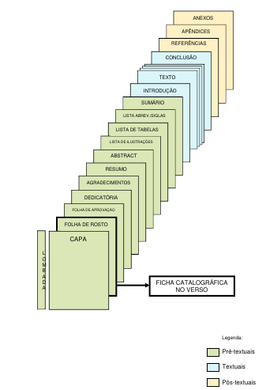
Fonte: Manual ABNT: Regras Gerais de Estilo e Formatação de Trabalhos Acadêmicos, pg. 13
De antemão, devemos considerar que as páginas devem ser configuradas para formato A4, orientação retrato, e margens esquerda e superior em 3cm, direita e inferior, 2 cm. Quanto a fonte, devemos utilizar Times New Roman ou Arial em tamanho 12 para corpo do texto e 10, para citações, notas de rodapé, paginação e legendas.
Para configurar as páginas, sugiro criar estilos e, considerando a existência de três segmentos no documento (pré-textuais, textuais e pós-textuais), pode ser interessante realizar a criação de três novos estilos de página. Caso esteja com dúvidas sobre como criar tais estilos, sugiro a leitura do tópico que falamos sobre o recurso.
Será importante também colocar todos os elementos pré-textuais obrigatório e àqueles opcionais que farão parte do trabalho, um em cada página (apenas reservar a página). Assim teremos ideia do número de páginas utilizadas e, também, do que será necessário configurar para gerar os índices de forma automática.
Elementos pré-textuais¶
São as partes do documento que antecedem o conteúdo do trabalho. Nesta categoria, temos:
Capa¶
Item obrigatório de qualquer trabalho. Identifica a instituição, curso, autores, título e subtítulo do trabalho, local e ano de entrega.
Importante lembrar que a capa não conta na numeração de página (página 0) e que todos os elementos pré-textuais não devem apresentar a numeração de página no rodapé.
Lombada¶
Para trabalhos encadernados, este item se torna obrigatório. Sua estrutura é definida pela instituição.
Folha de Rosto¶
Sua presença no documento é obrigatória. Tem por objetivo apresentar os elementos de identificação do trabalho, como nome do autor, título e subtítulo, natureza, objetivo do trabalho, nome da instituição, nome do orientador, local e ano de entrega.
Composição Institucional e Ficha Catalográfica¶
Normalmente gerada por bibliotecários. Será preciso verificar o procedimento da instituição para sua obtenção.
Errata¶
Item opcional, utilizado para adicionar a lista de erros e suas respectivas correções.
Folha de Aprovação¶
Obrigatória. Deve conter detalhes dos autores, da instituição, título pretendido e detalhes dos componentes da banca, com espaço para assinatura.
Dedicatória¶
Item opcional utilizado para prestar homenagens e/ou dedicar o trabalho para alguém.
Agradecimento¶
Item opcional utilizado para agradecer pessoas e/ou instituições que colaboraram de alguma forma para o desenvolvimento do trabalho.
Epígrafe¶
Elemento opcional onde o autor pode fazer uma citação que foi significativa no contexto do trabalho. A fonte deve ser indicada.
Resumo¶
Item obrigatório, escrito na língua vernácula (do país). Apresenta os pontos relevantes do documento. Acompanha ao final a lista de palavras-chave.
Resumo em Língua Estrangeira¶
Corresponde ao abstract, versão do resumo escrito em inglês, acompanhado das keywords (palavras-chave). É obrigatório apresentá-lo.
Lista de Ilustrações¶
Índice contendo as legendas das ilustrações apresentadas no texto, conforme sua ordem de aparição. É opcional.
Lista de Tabelas¶
Índice contendo as legendas das tabelas apresentadas no texto, conforme sua ordem de aparição. É opcional.
Lista de Abreviaturas e Siglas¶
Relação de siglas e abreviaturas utilizadas no texto, acompanhadas dos respectivos significados. Também é um elemento opcional.
Lista de Símbolos¶
Relação de símbolos utilizados e seus respectivos significados. É opcional.
Sumário¶
Último dos elementos pré-textuais. É obrigatório constar no documento. Corresponde a organização de tópicos do trabalho (capítulos, seções, etc), apresentadas na ordem em que aparecem com o respectivo número de página.
Elementos textuais¶
Os elementos textuais devem contemplar a Introdução, Desenvolvimento e Conclusão do trabalho e naturalmente são obrigatórios.
Em termos de formatação, os pontos mais relevantes dos elementos textuais são títulos, numeração de páginas, corpo do texto, citações, figuras, quadros e tabelas.
Vamos começar analisando a questão da numeração de páginas. Neste ponto, precisamos saber exatamente quantas páginas iremos utilizar nos elementos pré-textuais (todos os obrigatórios e os opcionais escolhidos). Também devemos nos atentar de que a capa não é contabilizada.
Então, para nosso tutorial, vamos supor que nosso trabalho tenha os seguintes elementos pré-textuais:
CapaFolha de RostoFolha de AprovaçãoAgradecimentosLista de IlustraçõesLista de TabelasResumoAbstractSumário
Considerando que teremos 9 páginas de elementos pré-textuais e que a capa não entra na contagem, a numeração de páginas, que será apresentada a partir da Introdução, deve iniciar em 9. Para conseguirmos ocultar a numeração dos elementos pré-textuais e apresentarmos a partir dos elementos textuais, devemos utilizar o recurso quebra manual de página, em conjunto com os estilos de página que criamos anteriormente.
Antes de realizar a quebra de página, você deve reservar as páginas para os elementos pré-textuais. Utilize o atalho CTRL+ENTER para inserir nova página no documento. Agora, estando com o cursor na última página dos elementos pré-textuais (referente ao sumário), vá até o menu Inserir -> Mais quebras -> Quebra Manual e configure os valores conforme a imagem a seguir. Perceba que iremos utilizar o estilo de página que criamos, alterando a sequência de numeração para 9.
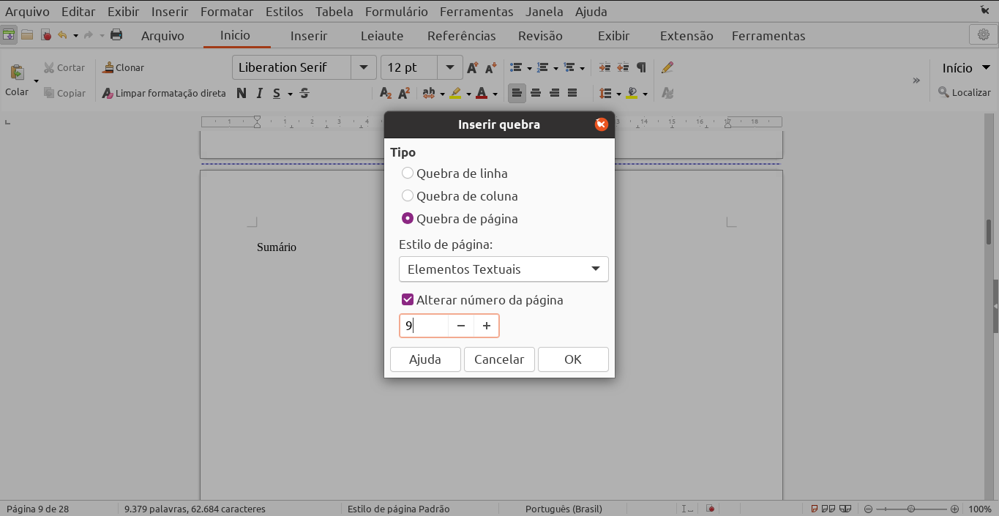
As quebras de página são extremamente úteis porque definem regiões do documento em que podemos aplicar estilos de página diferentes. Além disso, cada região terá cabeçalho e rodapé específicos, o que nos permitirá ocultar o número de página dos elementos pré-textuais de forma simples.
Sabemos que o número de página deve estar no canto superior direito do documento, em fonte Arial ou Times New Roman, tamanho 10. O primeiro passo para adicioná-lo é exibir o cabeçalho da página, clicar no espaço correspondente e finalmente acessar o menu Inserir -> Número de Página.
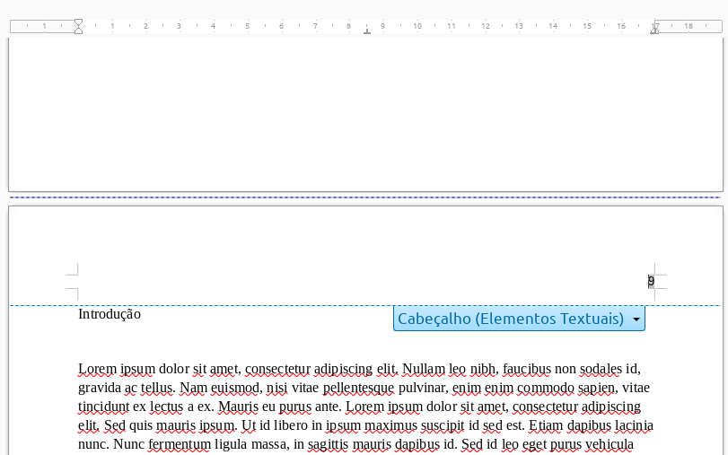
Nossos próximos itens de formatação serão os títulos. Configurá-los corretamente é o segredo para a geração do sumário de forma simples. Neste procedimento estaremos alterando estilos de parágrafo.
Por padrão, o LibreOffice Writer trás estilos específicos para títulos. Logo, é mais rápido modificar estes existentes do que criar novos. Para encontrá-los, um dos caminhos é pela aba de estilos, filtrando por Estilos de Texto.
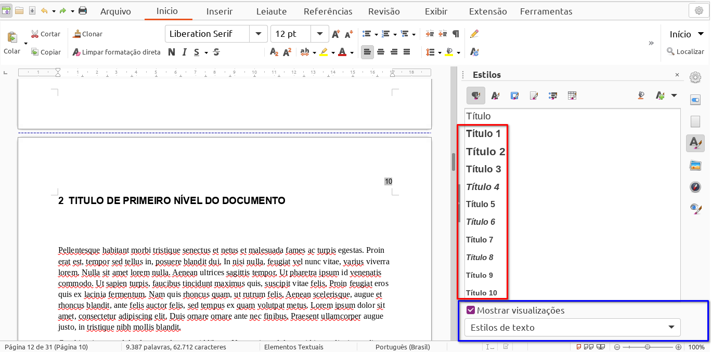
Capítulos¶
Começaremos a configuração pelo título de primeiro nível, que estabelece os capítulos do documento e, pela norma, deve sempre iniciar nova página. Para modificarmos o estilo Título 1 devemos clicar com o botão direito do mouse sobre ele, escolhendo a opção Modificar. Lembre-se que já apresentamos as telas de edição de estilos de parágrafo. Caso não lembre, sugiro uma nova leitura.
Os demais níveis você poderá formatar utilizando como referência os exemplos aqui apresentados. Haverá variação do tamanho da fonte e efeitos aplicados. Revise a norma para detalhes. E, o mais importante: certifique-se de configurar os títulos do nível correto e de aplicar o estilo nos respectivos títulos.
Na sequência apresentamos os passos de configuração para Título 1.
Alinhamento do texto¶
Dica
Alinhar à esquerda. Aba Alinhamento, Opções.
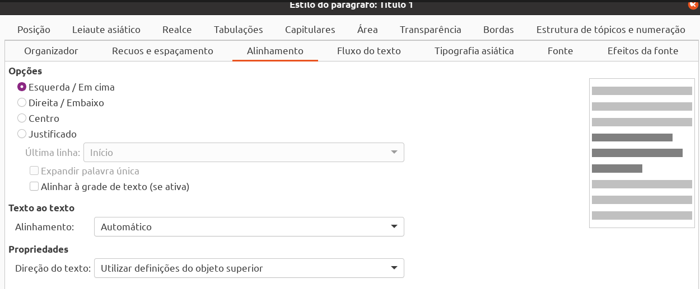
Caracteres¶
Dica
Converter automaticamente todos os caracteres para maiúsculo. Aba Efeitos da fonte, Efeitos
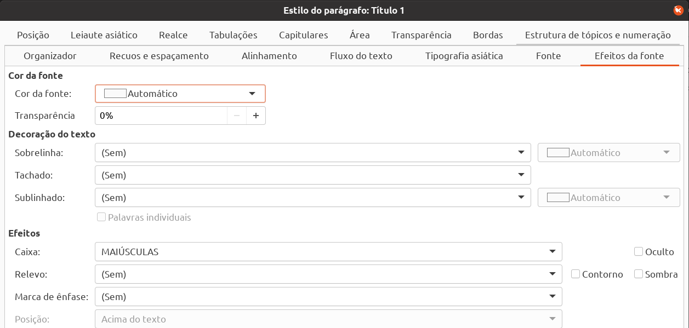
Fonte¶
Dica
A norma define que a fonte seja Aria ou Times New Roman, tamanho 14 e um efeito, como negrito. Estas configurações são encontradas na
Aba Fonte
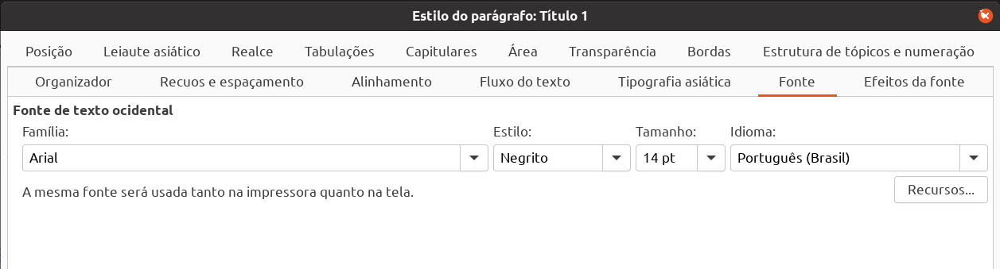
Fluxo do texto¶
Dica
Títulos de primeiro nível devem iniciar nova página.Aba Fluxo do texto, Quebras
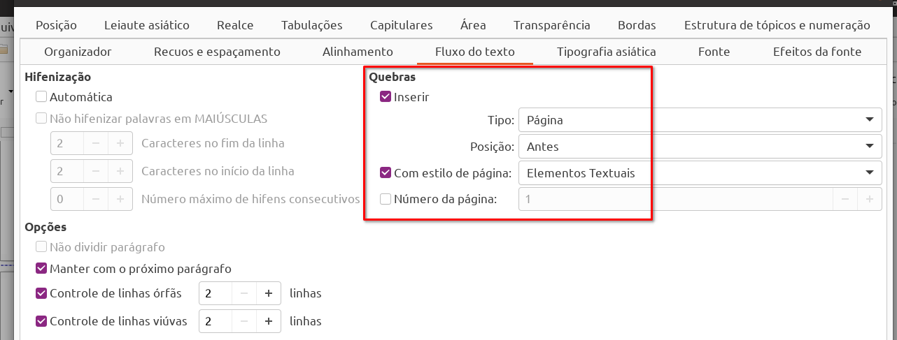
Nível do parágrafo¶
Dica
Verificar se o parágrafo está vinculado ao nível 1 do texto. Esta configuração está indisponível para edição.
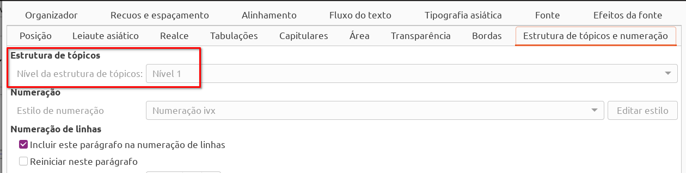
Espaçamento¶
Dica
Antes ou após o parágrafo deve-se deixar a distância equivalente a duas linhas de texto. No caso do título de primeiro nível, informamos somente o espaço abaixo do parágrafo. Tal configuração é feita na Aba Recuo e Espaçamento. Importante observar que, para os demais níveis, deve ser configurado o espaço acima e abaixo do parágrafo.
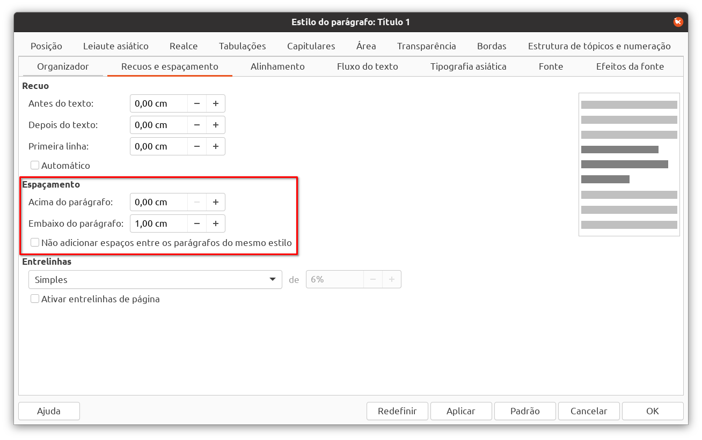
Numeração dos capítulos¶
A numeração de títulos deve utilizar números arábicos, identificando a sequência em que aparecem no documento. Considerando que você configurou e aplicou os estilos corretamente, iremos agora configurar a numeração por meio do menu Ferramentas -> Numeração de Capítulos.
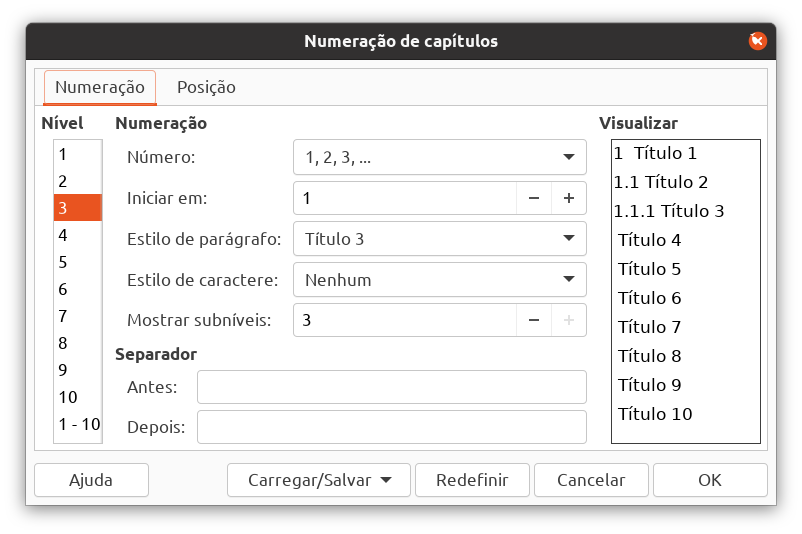
Observe na tela acima que, no lado esquerdo, temos os 10 níveis de tópicos possíveis. Clicando sobre um deles, temos a possibilidade de configurar o número, ínicio da contagem, estilo de parágrafo associado ao nível, estilo de caractere, mostrar subníveis e separadores.
Em número, informe a sequência de número arábicos (1,2,3). Verifique se o estilo de parágrafo informado condiz com àqueles que você utilizou. Faça as alterações conforme necessário. No campo mostrar subníveis você deve informar os níveis que irão compor a numeração. Aumente este valor para o máximo possível (todos os níveis anteriores). Demais itens podem ficar com os valores padrão. Repita a configuração para cada nível existente no seu documento.
Por fim, na aba Posição, campo numeração seguida de, informe Espaço.
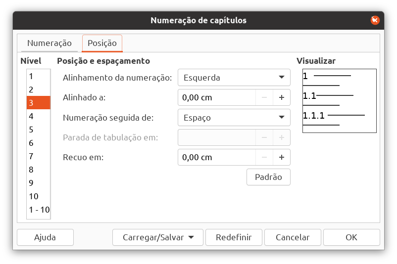
Sumário automático¶
Uma vez configurados os estilos e numeração dos capítulos, a geração do sumário de forma automática se torna possível. Para o procedimento, devemos ir até a página reservada ao sumário na seção de elementos pré-textuais.
Após, acessar a aba Referências, botão Referências que está a direita, opção Sumário, Índice ou Bibliografia.
Em Título deixaremos o valor padrão. No campo Tipo deve estar Sumário e em Para, o valor deve ser Documento inteiro. Ao clicar em OK, o índice do sumário será inserido automáticamente no local em que o cursor foi posicionando no documento.
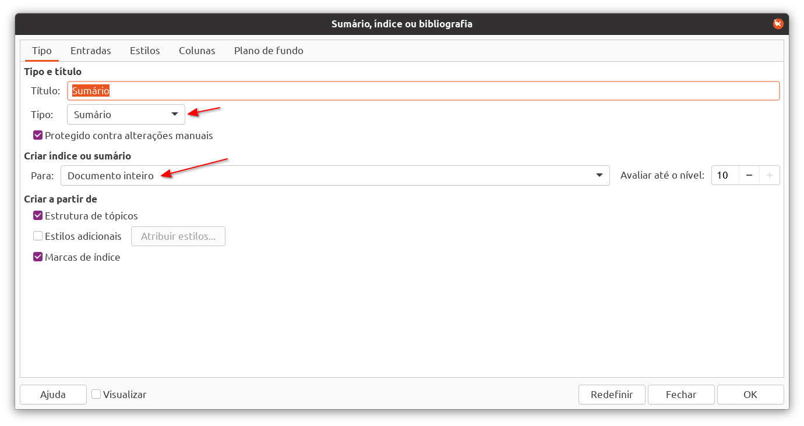
Quando o sumário é inserido, cada entrada gerada vincula-se com estilos pré-definidos. Logo, precisaremos ajustar a formatação destes estilos para atender os critérios da ABNT, que orienta a apresentação de cada entrada no mesmo formato em que aparece no corpo do texto. O que temos de momento é algo semelhante a imagem abaixo (irá depender dos títulos definidos em seu documento).
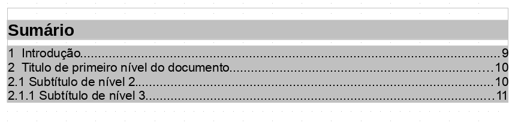
Para ajustarmos a formatação das entradas do sumário devemos inicialmente saber quais estilos são utilizados. Para isso, será preciso clicar com o botão direito do mouse sobre qualquer parte do sumário e escolher a opção Editar Índice. Na tela apresentada, escolhemos a aba Estilos.
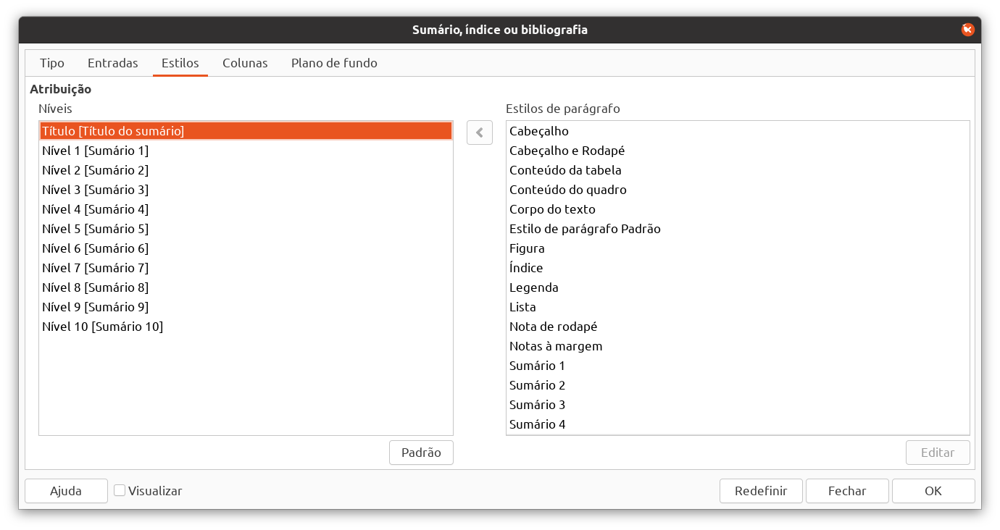
Perceba que, no lado esquerdo da tela, temos cada nível e o respectivo estilo entre []. Já no lado direito são listados todos os estilos de parágrafo disponíveis para que seja possível vincular o nível ao estilo desejado.
Nossa opção será, novamente, editar os estilos padrão (Título de sumário, Sumário 1, Sumário 2, etc), adequando-os àquilo que precisamos. O passo-a-passo para realizar o ajuste é idêntico a edição de qualquer outro estilo de parágrafo.
Além dos estilos, precisamos ajustar a construção das entradas, especificamente a parada de tabulação. Você deve ter percebido que o espaço entre o número da página e o texto do capítulo está sendo preenchido com ., sendo que o correto é espaço. Então, para este ajuste, devemos acessar a aba Entradas, e, para cada nível desejado, alterar o caractere da parada de tabulação.
Dica
Clicar primeiro sobre o número do nível, após no "T" e, por fim, informar o caractere de preenchimento correto.
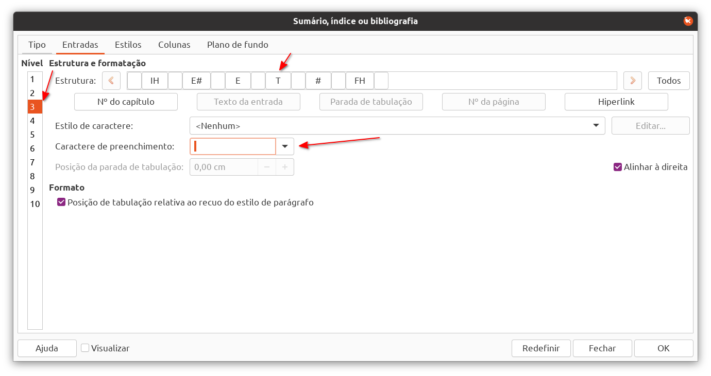
Legendas¶
Legendas são aplicadas a tabelas, quadros e ilustrações. Compreendem a descrição do item, de forma objetiva, bem como indicam a sequência do elemento dentro do texto. Segundo a norma, devem estar em tamanho de fonte 10, entre linhas simples, caracteres em maiúsculo.
Quadros: apresentação tabular de dados, com moldura em torno (borda externa). Utilizado para apresentar conteúdo teórico e dados numéricos sem tratamento estatístico.-
Tabelas: apresentação tabular de dados numéricos com tratamento estatístico. -
Ilustrações: São imagens, figuras, gráficos, diagramas, entre outros.
A inserção de legendas segue o mesma estratégia para todos os tipos citados. Por conta disso, iremos utilizar tabelas e imagens como estudo de caso.
Inserir tabelas no Writer pode ser feito através do menu Tabela -> Inserir Tabela.
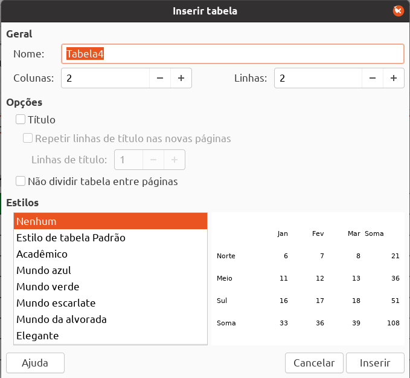
O campo nome é utilizado para identificar o objeto internamente e não será apresentado no texto. Em Opções, é útil marcar Título e, após, Repetir linhas de título nas novas páginas. Tal configuração aplica-se quando o conteúdo da tabela excede o espaço disponível da página e gera uma quebra. Neste caso, as primeiras n linhas da tabela serão repetidas na próxima página. Também é possível marcar um estilo predefinido de estilo para tabelas, caso necessário.
Uma vez inserida no texto, já podemos adicionar a legenda para nossa tabela, clicando com o botão direito sobre qualquer célula da mesma, opção Inserir Legenda. O procedimento é exatamente o mesmo para outros tipos de elementos, como quadros, imagens, etc. A tela a seguir será apresentada:
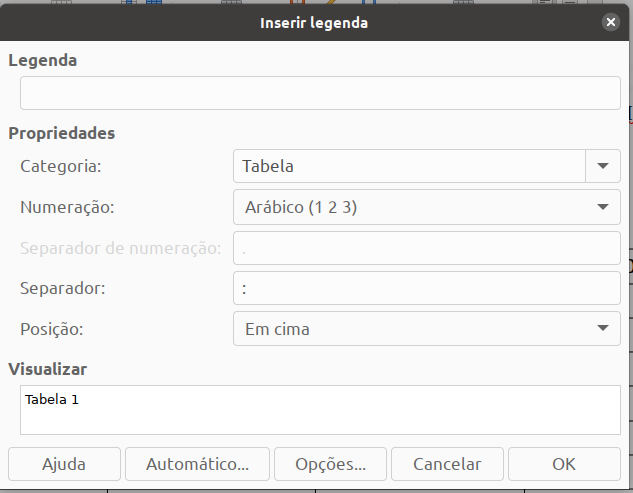
Em Legenda, informamos o texto que irá aparecer no documento. Em Categoria, informamos qual é o "tipo" do objeto (se não houver na lista, é possível informar um novo). A Numeração corresponde a configuração de como a sequência será apresentada (segundo a norma, utilizar números arábicos). O caractere que irá separar o número do texto da legenda deve ser especificado em Separador. Aqui utilizamos o traço (-). Por fim, em Posição, informar em cima.
Podemos repetir este procedimento para todo objeto que requer legenda no documento. Contudo, é mais prático configurar opções de inserção automática de legendas. Conseguimos isso por meio do botão Automático. Na tela apresentada, marcamos para quais objetos desejos que o Writer insira as legendas automaticamente, assim como a configuração esperada.
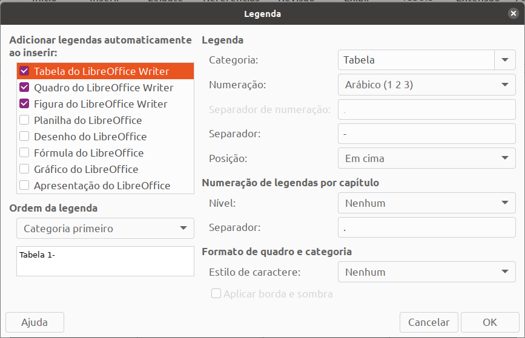
Quanto à formatação do texto legenda, este deve ser realizado por meio do estilo correspondente. Editar o estilo a partir do texto é simples. Basta clicar sobre o texto com o botão direito do mouse, escolher a opção Parágrafo -> Editar Estilo. A norma recomenda que a fonte seja Arial ou Times New Roman, tamanho 10, negrito, caracteres em maiúsculo.
Quando temos legendas inseridas em nosso documento, podemos solicitar ao writer que insira o índice automático, se assim desejarmos, na folha correspondente dos elementos pré-textuais. O processo é idêntico à inserção do sumário, com a simples diferença de que devemos alterar o tipo de índice a ser inserido. Os campos importantes são Título, Tipo e Categoria, que devem estar alinhados com os objetos que você deseja listar no índice. Já a formatação do índice deve ser feita pelos estilos correspondentes, tal qual explicamos com relação ao sumário.
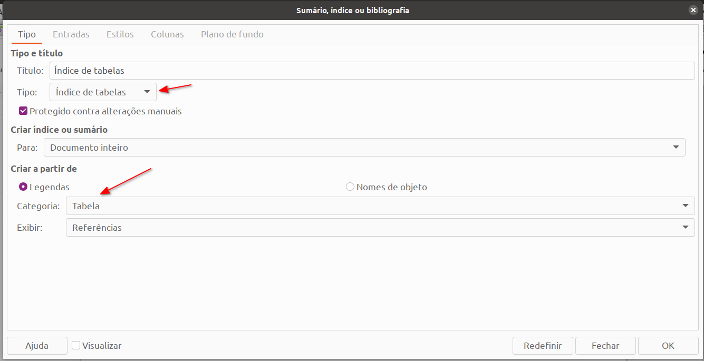
Entradas bibliográficas e bibliografia¶
Quando elaboramos documentos acadêmicos/científicos, consultamos diferentes fontes para endossar nossas afirmações. Livros, revistas científicas, web sites, documentos digitais são exemplos de fontes que podemos utilizar. Todos estes recursos precisam ser citados no texto e jamais podemos utilizar uma afirmação alheia como se fosse nossa. Tal prática constitui crime de plágio e é repudiada por qualquer acadêmico sério.
Manter controle das citações não é tarefa simples, especialmente quando o documento faz uso de dezenas ou até centenas delas. Além disso, a norma ABNT especifica detalhadamente como devemos citar e apresentar a bibliografia que utilizamos.
Para nos auxiliar neste tarefa, o LibreOffice Writer oferece ferramentas específicas, voltadas ao gerenciamento de bibliografia de documentos. Trabalhar com referências bibliográficas requer a compreensão dos conceitos de banco de dados bibliográfico, entrada bibliográfica e bibliografia.
O banco de dados bibliográfico constitui o repositório de todas as referências já cadastradas no LibreOffice Writer. Cada registro contém os detalhes da obra, como autores, título, ano de publicação, entre outros campos.
Logo, o primeiro do processo do processo será cadastrar a obra neste banco de dados. Para isso, devemos acessar o menu Ferramentas -> Banco de Dados Bibliográfico.
Na tela apresentada, iremos cadastrar os detalhes de todas as obras que precisamos citar no documento. O campo Nome abreviado merece especial atenção, pois ele será inserido nas citações. Então, é conveniente informar de acordo com a norma, a qual define como sendo o SOBRENOME, ano de publicação.

Após incluída a bibliografia, podemos citá-la no texto a partir do menu Inserir -> Sumários e Índices -> Entrada Bibliográfica. O próximo passo será escolher qual das referências já cadastradas no banco de dados bibliográficos será utilizada na citação. Faremos isso para toda e qualquer citação existente.
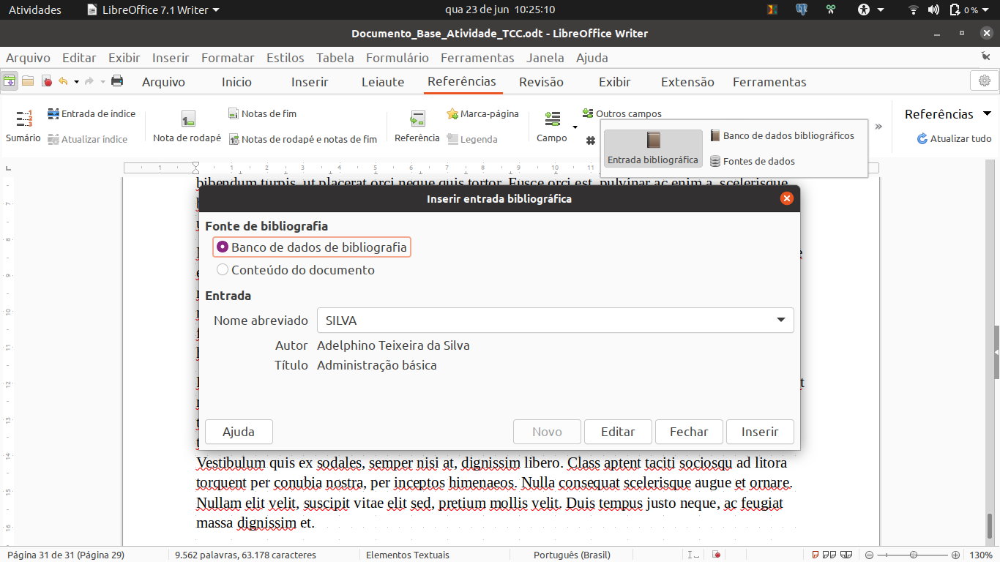
Por fim, iremos adicionar a bibliografia ao documento. Faremos tal processo por meio do menu Inserir -> Sumários e Índices -> Sumário, índice ou bibliografia. Lembre-se de deixar o cursor do mouse na posição correta do documento antes de inserir o índice.
A tela de configuração é a mesma que utilizamos para inserir os demais índices, com exceção dos campos de configuração específica para bibliografia. Entrada numérica, por exemplo, é o local onde alteramos a forma das citações (números ou nome abreviado). Em Colchetes, especificamos o tipo de caractere que irá envolver a citação no texto.
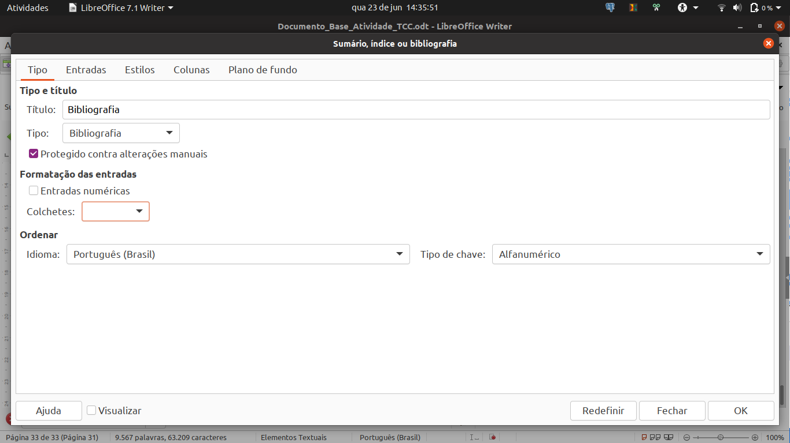
Outra importante configuração refere-se a definir como cada entrada de bibliografia será apresentada no texto. Perceba que, na coluna da esquerda, estão todos os tipos de obras, sendo que para cada uma delas podemos especificar o formato de construção da referência, modificando a composição e ordem dos campos em Estrutura e Formatação. A ABNT especifica regras para referenciar cada tipo de obra. Logo, você deverá compor a entrada com base na norma.
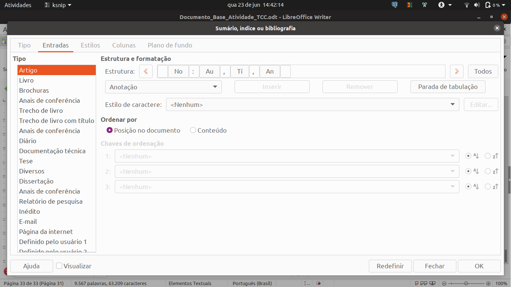
Elementos pós-textuais¶
Os elementos pós-textuais compreendem as referências bibliográfias, apêndices e anexos. Quanto às referências, já comentamos sobre como inserí-las de forma automática no documento. Já apêndices e anexos seguem o padrão de títulos dos elementos textuais de primeiro nível.
Referências¶
BRITO, G. F.; CHOI, V. P.; ALMEIDA, A. Manual ABNT: Regras Gerais de Estilo e Formatação de Trabalhos Acadêmicos (4ª edição revisada e ampliada). 2014. Disponível em: <http://biblioteca.fecap.br/wp-content/uploads/2016/03/Manual-ABNT_-regras-gerais-de-estilo-e-formatação-de-trabalhos-acadêmicos.pdf>. Acesso em: 5 jun. 2021.